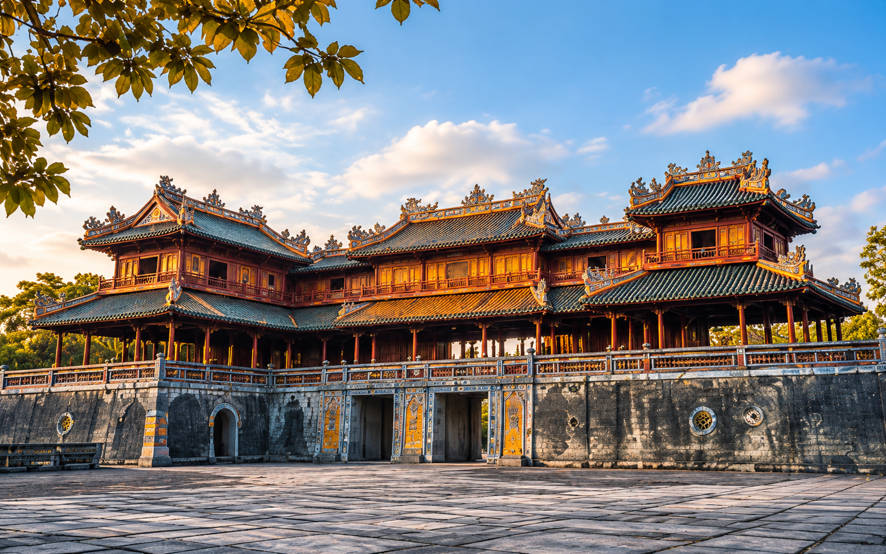

Giới thiệu về Huế
Vùng đất di sản, văn hóa và con người
Tổng quan
Huế – Kinh đô của những giá trị bền vững
Huế là vùng đất cố đô, từng là kinh đô dưới triều Nguyễn (1802–1945), nơi lưu giữ những giá trị lịch sử, văn hóa và kiến trúc đặc sắc của dân tộc.
Không chỉ nổi bật với Quần thể di tích Cố đô Huế, nơi đây còn hấp dẫn bởi dòng sông Hương thơ mộng, nhịp sống thanh bình và con người hiền hòa, mến khách.
Ngày nay, Huế đang gìn giữ và phát huy những giá trị truyền thống, đồng thời hướng tới phát triển du lịch bền vững, trở thành điểm đến hấp dẫn của du khách trong và ngoài nước.

Dấu mốc lịch sử
Hành trình hình thành và phát triển
-
Dấu mốc mở cõi
Hai châu Ô, Lý gia nhập Đại Việt, gắn với công chúa Huyền Trân.
-
Kinh đô triều Nguyễn
Huế trở thành kinh đô, mở đầu thời kỳ phát triển của kiến trúc và văn hóa cung đình.
-
Di sản thế giới
Quần thể di tích Cố đô Huế được UNESCO ghi danh vào Danh sách Di sản thế giới.
-
Hôm nay
Tiếp nối di sản
Huế tiếp tục gìn giữ di sản và hướng tới phát triển du lịch, văn hóa bền vững.
Huế không chỉ là một điểm đến, mà còn là một cảm xúc – nơi thời gian dường như lắng đọng giữa những giá trị xưa và nay.